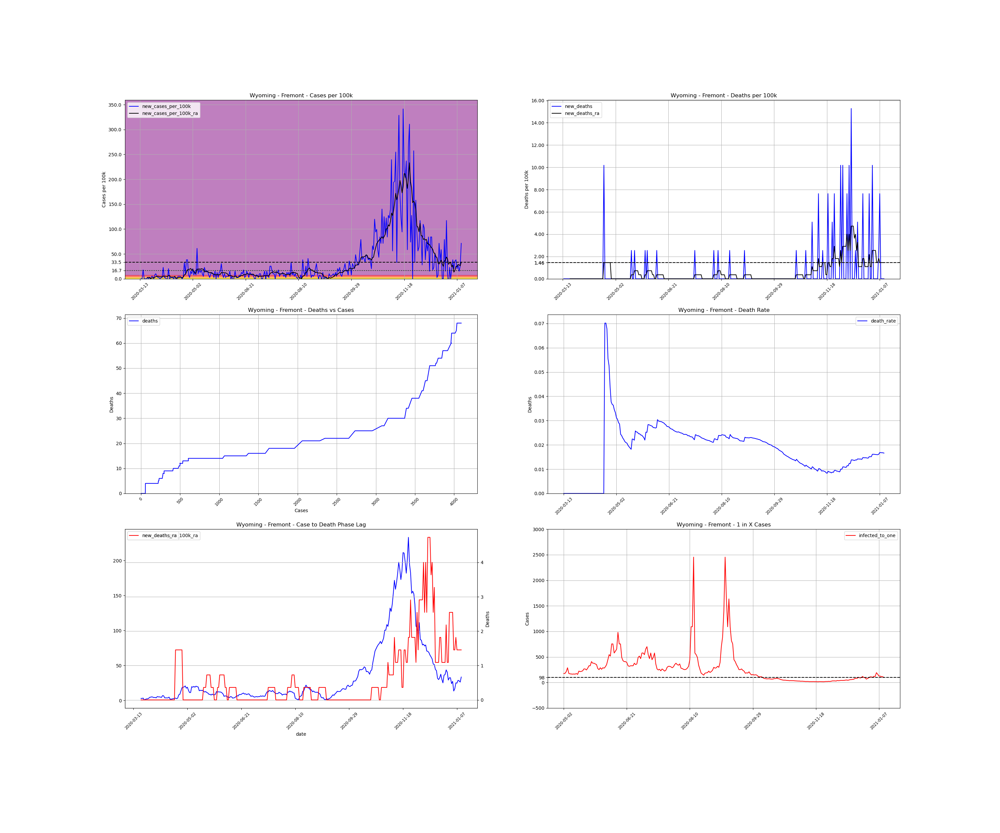
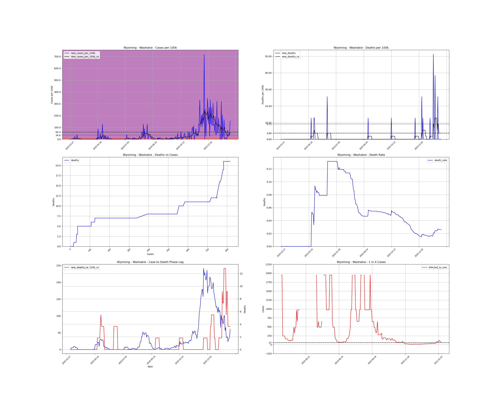

<h1>Wyoming Counties</h1><table><tr><td><a id="#Albany">Albany</a></td></tr><tr><td><a id="#Big Horn">Big Horn</a></td></tr><tr><td><a id="#Campbell">Campbell</a></td></tr><tr><td><a id="#Carbon">Carbon</a></td></tr><tr><td><a id="#Converse">Converse</a></td></tr><tr><td><a id="#Crook">Crook</a></td></tr><tr><td><a id="#Fremont">Fremont</a></td></tr><tr><td><a id="#Goshen">Goshen</a></td></tr><tr><td><a id="#Hot Springs">Hot Springs</a></td></tr><tr><td><a id="#Johnson">Johnson</a></td></tr><tr><td><a id="#Laramie">Laramie</a></td></tr><tr><td><a id="#Lincoln">Lincoln</a></td></tr><tr><td><a id="#Natrona">Natrona</a></td></tr><tr><td><a id="#Niobrara">Niobrara</a></td></tr><tr><td><a id="#Park">Park</a></td></tr><tr><td><a id="#Platte">Platte</a></td></tr><tr><td><a id="#Sheridan">Sheridan</a></td></tr><tr><td><a id="#Sublette">Sublette</a></td></tr><tr><td><a id="#Sweetwater">Sweetwater</a></td></tr><tr><td><a id="#Teton">Teton</a></td></tr><tr><td><a id="#Uinta">Uinta</a></td></tr><tr><td><a id="#Washakie">Washakie</a></td></tr><tr><td><a id="#Weston">Weston</a></td></tr></table>